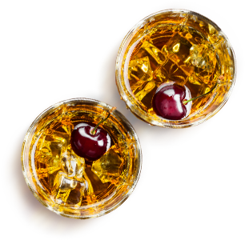
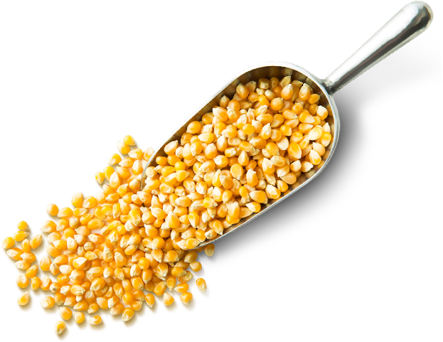

Виды виски
Розбираемся в тонкостях

Итак, давайте разберемся какие бывают виды виски, чем они отличаются и что же выбрать в магазине
Самая распространенная классификация по типу производства и использования сырья
-
Солодовый виски
(перевод с английского «malt whisky») – наиболее дорогие, элитные сорта виски. Производится из чистого ячменя, что влияет на высокое качество продукта и цену. Солодовые виски разделяют еще на два вида:- Виски односолодовый («single malt») и бочковой («blended malt», «pure malt»). В первом случае используется виски произведенный одной винокурней, возможно смешение разных сортов напитка с различным сроком выдержки.
- Виски бочковой представляет собой смесь солодовых сортов виски разных производителей.
- 
-
Зерновой виски
(«grain whisky»)–отличается низким качеством. Изготавливается из кукурузы с небольшим добавлением ячменя и практически не встречается на прилавках. Применяется при производстве других алкогольных напитков - джина и водки. -
Самый популярный и доступный - купажированный виски
(в английском языке используется выражение «Blanded whisky»). Получается после смешивания сортов зерновых виски с солодовыми. -
Американский виски зерновой - Бурбон
(«Burbon»). Основное сырьё – кукуруза, так как она лучше культивируется на территории Северной Америки. Имеет сладковатый вкус и очень популярен в США и странах Европы. - 
Сорта и марки виски
Классификация по стране производителю
Так же виды виски различают по стране производителю, что несомненно влияет на качество конечного продукта
Рассмотрим
лучшие сорта виски:
Шотландия
При производстве Шотландских и Ирландских видов виски используется ячменный солод. Территория этих стран считается местом происхождения этого популярного напитка. Просушка торфом, двойная перегонка и срок выдержки более трех лет придают напитку характерный мягкий вкус, золотисто-янтарный оттенок и сладкие, фруктово-цитрусовые нотки. Лидерами продаж Шотландского виски по праву можно назвать марки «Johnie Walker» и скотч «Schottish Collie». Шотландский скотч перегоняется и выдерживается только на территории этой страны.
Ирландия
Ирландцы при производстве добавляют рожь и овес, сушка солода происходит в печи, а перегонка осуществляется трижды. Самые распространенная марка – «Jameson».
США
Американский виски имеет сладковатый вкус, так как производится из кукурузы и выдерживается в новых бочках, обожжённых изнутри. Повторно использовать эти бочки запрещается. Самые популярные марки – «Jack Daniel’s» (выдерживается в бочках более пяти лет), «Jim Beam» (производится из смеси зерен с добавлением дрожжей).
Япония
В Японии виски производится с начала ХХ века. Эта страна является самым молодым производителем виски. Выдерживается преимущественно зерновой виски, с длительной выдержкой в дубовых бочках из-под хереса или бурбона. Имеет легкий фруктовый вкус с нотками дыма.
Канада
Канадский виски имеет яркий, насыщенный вкус. Изготавливается из смеси зерен кукурузы, ячменя и ржи.
Сорта виски, производимые другими странами, получили меньшее распространение, но имеют оригинальные вкусовые оттенки и заслуживают внимания